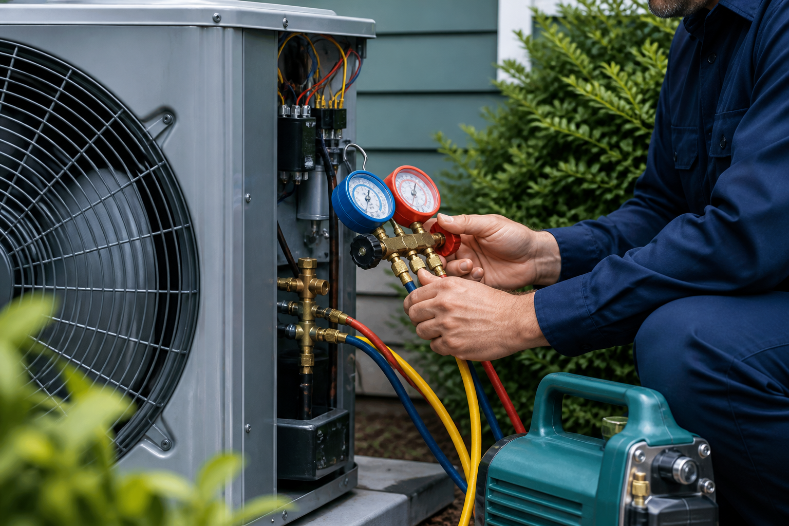
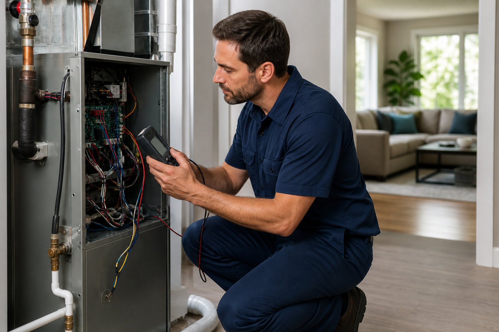

Maintenance · 6 min read
Seven signs your HVAC system needs professional attention
Learn which noises, smells, airflow changes, and performance problems should not be ignored.
Read articleComfort knowledge
Seasonal guidance, system-care basics, and straightforward answers from experienced HVAC professionals.
Featured articles
Use these guides to spot common issues early and make more confident decisions about your equipment.

Learn which noises, smells, airflow changes, and performance problems should not be ignored.
Read article
Small changes in filters, thermostat habits, airflow, and maintenance can make a meaningful difference.
Read articleCompare system age, repair history, comfort, efficiency, and long-term value before deciding.
Read articleHeating and cooling systems often show small warning signs before a major breakdown. Paying attention early can protect comfort and help prevent additional damage.
Uneven temperatures, weak airflow, frequent cycling, unusual noises, unexpected odors, rising utility bills, and moisture near equipment all deserve attention. A single symptom may have a simple cause, but several symptoms together often point to a larger airflow or equipment issue.
Turn equipment off and call for help if you smell burning, see sparking, notice water near electrical components, or suspect a gas leak. Leave the building and contact the appropriate utility or emergency service when gas may be present.
Efficiency starts with airflow. Check filters monthly, keep supply and return vents clear, and avoid closing multiple registers in an attempt to redirect air.
Large, frequent thermostat changes can make comfort less predictable. A modest setback while the home is empty, paired with scheduled recovery before you return, is usually easier on the system. Seasonal maintenance also helps equipment operate closer to its intended performance.
Comfort problems that persist after basic checks may come from duct leakage, insulation gaps, equipment sizing, or controls. A professional evaluation can separate the cause from the symptom.
Start with system age and overall condition, then look at repair frequency, comfort, efficiency, and the cost of the proposed repair. No single rule works for every home.
A well-maintained system with an isolated repair may still offer useful service. Replacement becomes more attractive when failures repeat, major components are involved, temperatures remain uneven, or energy use is climbing despite proper maintenance.
Ask for written repair and replacement options. A good proposal should explain equipment sizing, efficiency, warranty coverage, installation scope, and expected operating differences.
Need advice for your system?
Tell us what you are noticing and we will help identify the right next step.
Contact our team